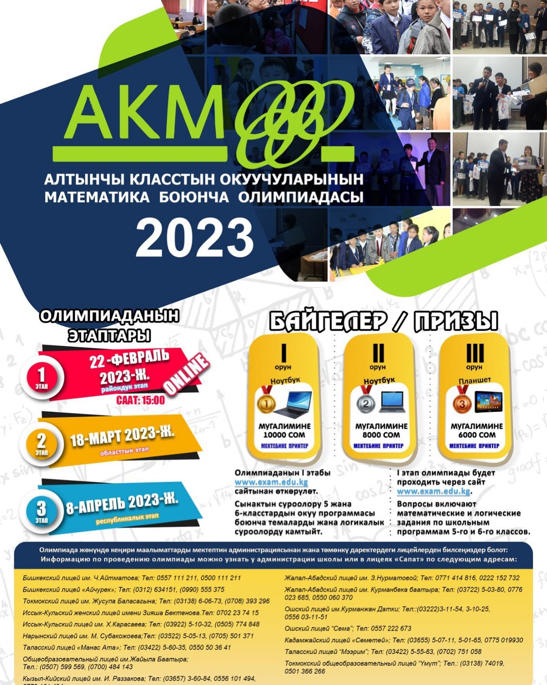

АКМО (MATHEMATICAL OLIMPIAD BETWEEN 6TH GRADERS)
In order to develop interest in the study of mathematics, as well as improve various types of intellectual competitions among students of the Republic, identify gifted children and create conditions for their further support,the International institution "Sapat" with the support is the Ministry of Education and Science is the Kyrgyz Republic,holds a mathematical Olimpiad among students of 6 classes of secondary school.